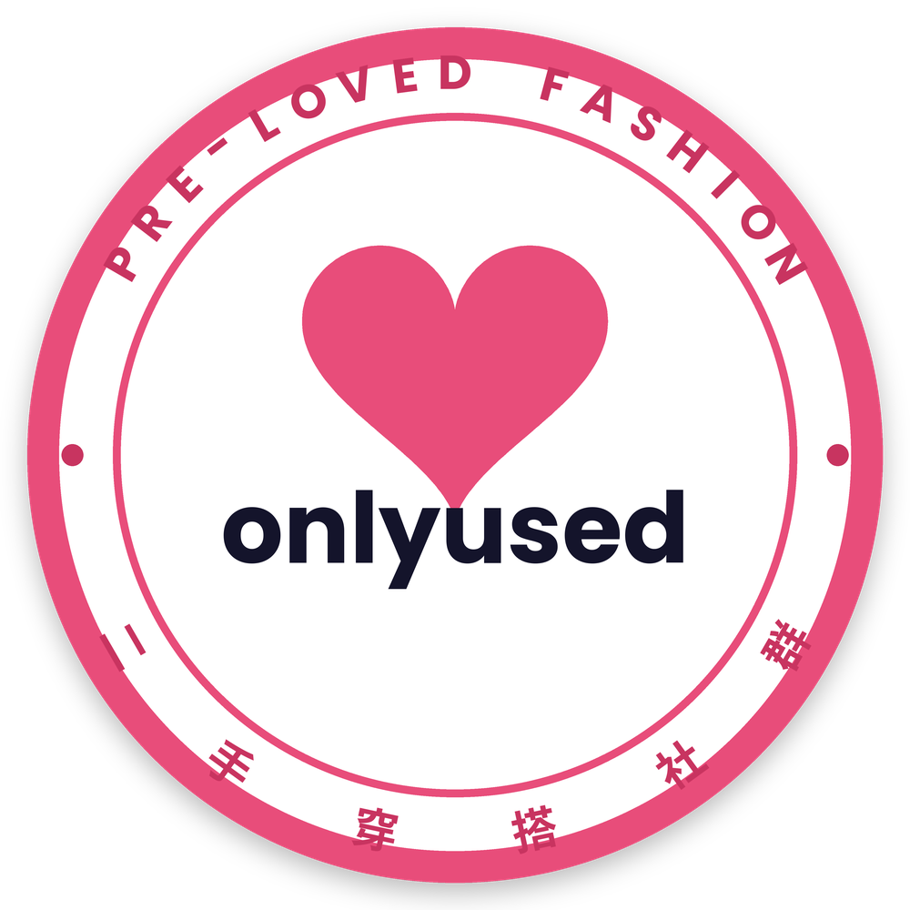

原網站已下架，這是依留存文件重建的還原版；畫面中的帳號、商品、價格皆為示意；商品照片因過於私密未放上，圖片僅供示意。 完整說明The original site has been taken down; this is a restoration from preserved documents. Accounts, products and prices are illustrative; product photos are too private to publish, so all images are placeholders. Full note
原本的 OnlyUsed 網站（onlyused.me）已經下架。這份作品集依據下架前留存的介面樣式、2026/04 的平台功能規格、2026/05 的提案簡報與當時的頁面檔案重建，盡可能還原平台原本的樣子。規格書、簡報與 13 個台灣版頁面是原始檔案；首頁、動態、拍賣等畫面依原站設計系統與規格書重新製作。畫面中的帳號、商品、價格與數字皆為示意資料，並非真實營運數據，也不含任何露骨內容；商品照片因過於私密，一律沒有放上實際圖片，圖片區塊僅供示意。
The original OnlyUsed website (onlyused.me) has been taken down. This portfolio was rebuilt from the interface styles preserved before the takedown, the April 2026 platform spec, the May 2026 pitch deck and the page files of the time, to restore the platform as faithfully as possible. The spec, the deck and the 13 Taiwan-version pages are original files; Home, Feed, Auctions and the other screens were recreated from the original design system and the spec. All accounts, products, prices and figures are illustrative, not real operating data, and there is no explicit content. Product photos are too private to publish, so no real images are used — every picture is a placeholder.
一個只能在私訊裡進行的市場，我試著把它做成平台。
A market that only existed in DMs — and my attempt to make it a platform.
OnlyUsed 是我在 2026 年 3 月開始創辦的二手成人內衣物交易平台。我們在台灣設立公司、寫出完整的創作者平台規格、做出網站原型，並三次調整定位；最後受阻於法規、金流與驗證數據，2026 年 9 月結束。這份作品集分成三大類，點任何卡片就能進去。OnlyUsed is the marketplace for pre-owned adult intimates I started building in March 2026. We incorporated in Taiwan, wrote a full creator-platform spec, built a website prototype and repositioned three times — until regulation, payments and a lack of validation data stopped us in September 2026. The portfolio has three parts; click any card to jump in.
原始檔案Original files
15 份，點一下就預覽15 files — click to preview精選創作者Featured creators
看全部 →See all →進行中拍賣Live auctions
看全部 →See all →熱門商品Popular pieces
逛市集 →Browse →所有創作者All creators
二手市集，每件都附出貨驗證
The pre-owned market, every piece verified at shipping
賣家出貨前拍照或錄影、買家收貨後再上傳一次，確認沒問題才撥款。Sellers record before shipping, buyers upload after delivery — funds release once both check out.所有拍賣All auctions
我的衣櫃My Closet
訂閱、收藏、出價與帳號安全 · 訪客示意帳號Subscriptions, saves, bids and account security · sample account
帳號安全與身分驗證Security and verification
規格：證件正反面＋自拍照人工審核；身分證字號以雜湊比對，敏感資料需權限才顯示。Per the spec: ID front/back plus a selfie, reviewed by hand; ID numbers compared as hashes; sensitive data shown only with permission.
我的訂閱My subscriptions
收藏的單品Saved pieces
付款統一由平台代收；確認收貨，或送達 7 天內沒有爭議，才會撥款給賣家。Payment is held by the platform; the seller is paid once you confirm receipt, or 7 days after delivery with no dispute.
訂單Orders
服務條款與平台政策Terms and Platform Policies
本條款適用於帳號、上架、創作者商務、付款、寄送、退款、爭議、隱私與平台安全。These terms apply to accounts, listings, creator commerce, payments, shipping, refunds, disputes, privacy, and platform safety.
OnlyUsed 服務條款OnlyUsed Terms of Service
OnlyUsed 服務條款OnlyUsed Terms of Service
歡迎使用 OnlyUsed（以下稱「本平台」、「我們」或「OnlyUsed」）。使用本平台前，請詳閱本條款。當你註冊、瀏覽、上架、購買、傳送訊息、付款、申請退款、使用會員功能或以其他方式使用本平台，即表示你已閱讀、理解並同意受本條款拘束。若你不同意本條款任何部分，請立即停止使用本平台。
Welcome to OnlyUsed (the "Platform", "we", "us", or "OnlyUsed"). Please read these Terms carefully before using the Platform. By registering, browsing, listing, buying, sending messages, making payments, requesting refunds, using member features, or otherwise using the Platform, you confirm that you have read, understood, and agreed to be bound by these Terms. If you do not agree with any part of these Terms, please stop using the Platform immediately.
還原說明：英文為原站原文；中文依英文重新翻譯。Restoration note: the English is the original site text.
1. 定義1. Definitions
本段全文未於網站下架前保存。The full text of this section wasn't preserved before the site was taken down.
2. 年齡與資格2. Age and eligibility
本段全文未於網站下架前保存。The full text of this section wasn't preserved before the site was taken down.
從構想到結束From idea to wind-down
日期取自當時的文件、收據與核准函。Dates come from the documents, receipts and approval letters of the time.
三個版本：核心、台灣對外、海外Three versions: core, Taiwan-facing, overseas
核心想法沒變過；變的是在哪裡做、對外怎麼說、錢怎麼收。The core idea never changed. What changed was where to operate, how to present it and how to take money.
痛點與市場The problem and the market
內容取自 2026/05 的提案簡報。From the May 2026 pitch deck.
市場規模（簡報推估）Market size (deck estimate)
全球性健康市場 2025 年約 400–600 億美元、年成長 7–9%；亞太情趣用品市場約 100 億美元；台灣保守估計約新台幣 30 多億。簡報認為亞洲沒有專門交易此類商品的平台。Global sexual-wellness market roughly US$40–60bn in 2025, growing 7–9% a year; Asia-Pacific adult products about US$10bn; Taiwan conservatively NT$3bn+. The deck argued Asia had no dedicated platform for this trade.
⚠️ 簡報引用 Taiwan News（2025-04-23），未經獨立查證⚠️ Deck cites Taiwan News (2025-04-23); not independently verified國外競品Overseas comparables
- AllThingsWorn——專賣穿過的內衣、襪子、情趣服；簡報稱 2025 年底月訪問量約 120 萬次。AllThingsWorn — worn lingerie, socks and costumes; the deck cites about 1.2m monthly visits in late 2025.
- Used Sex Toys Only——主打驗證賣家與隱私安全，證明「匿名＋二手＋成人」的模式在國外已經存在。Used Sex Toys Only — built on verified sellers and privacy; proof the "anonymous + pre-owned + adult" model already works abroad.
產品：一個創作者變現平台Product: a creator monetisation platform
依 2026/04/28 與開發方定義的〈創作者平台功能規格清單（MVP＋拍賣核心版）〉。From the "Creator Platform Feature Spec (MVP + auctions)", defined with the development team on 28 Apr 2026.
錢怎麼流：平台統一收款、月結撥款How money flows: collected by the platform, paid out monthly
收費方式，改了四次Pricing, revised four times
每一次改動，都是被法規或金流條件推著走。Each change was pushed by regulation or payment constraints.
10% 服務費怎麼拆（2026/06–07）How the 10% fee split (Jun–Jul 2026)
海外版：向買家收保障費Overseas: a buyer protection fee
⚠️ 收單成本引自 2026/07 內部文件，未查證⚠️ Acquiring cost from a July 2026 internal doc; not verified信任與法遵Trust and compliance
法規是這個專案的第一個問題，也是最後一個。Regulation was this project's first problem — and its last.
2026/04/09 法律風險清單（節錄）Legal risk list, 9 Apr 2026 (excerpt)
| 風險Risk | 問題Issue | 對策Mitigation |
|---|
原清單共 10 項；其中 2 項涉及公開頁用詞與私訊內容的處理方式，未於此列出。The original list has 10 items; 2 concerning public wording and message content are not shown here.
海外版的信任設計：六種恐懼、六個功能Overseas trust design: six fears, six features
技術：規格、工具與海外架構Technology: spec, tools and overseas architecture
我不寫正式程式；我定義需求、選工具、訂架構原則。I don't write production code; I defined requirements, chose tools and set architecture rules.
規格規模Spec scope
前台 19 頁、前台 API 14 類、後台 27 個模組；含即時競標與私訊推播、KYC 與付費內容的私有檔案授權、電子發票串接。19 front-end pages, 14 API groups, 27 admin modules — including real-time bidding and chat, private-asset access for KYC and paid content, and e-invoicing.
用過的服務Services used
AWS（2026/05 起）、Google Workspace（2026/06）、Readdy（2026/07）——依當時帳單。AWS (from May 2026), Google Workspace (Jun 2026), Readdy (Jul 2026) — per invoices of the time.
資安要求Security requirements
雙重驗證、連續失敗鎖帳、角色權限分級、敏感資料（證件、撥款帳戶）獨立權限、所有後台操作可追溯。Two-factor auth, lockout after repeated failures, role-based access, separate permissions for sensitive data (IDs, payout accounts), and a full admin audit trail.
海外版：12 層「逃生艙」架構（2026/08 規劃）Overseas: a 12-layer "exit-ready" architecture (Aug 2026 plan)
成長策略Go-to-market
先借創作者既有的粉絲，再用等級制度留住她們。Borrow creators' existing audiences first, then keep them with a tier system.
初始客群Initial audience
OnlyFans、X 平台上創作者既有的粉絲——她們把粉絲帶進來，粉絲就是第一批買家。The existing fans of OnlyFans and X creators — creators bring their fans, and those fans are the first buyers.
獎勵等級制Reward tiers
依賣家聲譽與成交量決定熱門榜推薦；累積到一定等級可享 Premium 待遇，再往上可以開社群、直播與拍賣議價。Reputation and sales volume drive ranking; higher tiers unlock Premium perks, then communities, live streams and auction bargaining.
防止跳平台Keeping deals on-platform
私訊由 AI 偵測交換聯絡方式；平台保障只限站內成交，海外版再加上匿名寄件這個站外做不到的服務。AI flags contact details swapped in messages; protection only covers on-platform deals, and the overseas plan added anonymous shipping, which can't be had off-platform.
台灣對外版本與海外版的行銷Marketing for the Taiwan-facing and overseas versions
- 台灣對外版本（2026/06–07）——Meta／IG 廣告企劃、口碑滲透文案、種子賣家招募話術與追蹤表、零預算 Reels。Taiwan-facing (Jun–Jul 2026) — Meta/IG ad plan, word-of-mouth copy, seed-seller scripts and tracker, zero-budget Reels.
- 海外版（2026/07–08 規劃）——供給側優先、美英灘頭堡、前 30–50 位邀請制創始賣家；主流廣告禁止成人商品，改走 X、Reddit、Telegram 與 SEO。Overseas (Jul–Aug 2026 plan) — supply first, a US/UK beachhead, 30–50 invite-only founding sellers; mainstream ads ban adult goods, so X, Reddit, Telegram and SEO.
品牌Brand
名字直接呼應 OnlyFans 的創作者經濟；2026/07 定案粉色 OU 心形標誌。The name nods to the OnlyFans creator economy; the pink OU heart mark was settled in July 2026.

2026/05 的簡報還是另一套藍色結形圖示；7 月改為現在的粉色 OU 心形標誌與貼紙，並用於台灣對外版本「傳承品味，分享美感」。The May 2026 deck still used a blue knot mark; in July it became the pink OU heart and sticker, used for the Taiwan-facing tagline "Pass on taste, share style."
原始檔案Original files
提案簡報、平台規格，以及台灣對外版本的 13 個頁面。點「預覽」直接打開。The pitch deck, the platform spec and the 13 Taiwan-facing pages. Click Preview to open one.
2026/05 提案簡報（10 頁）May 2026 pitch deck (10 pages)
為什麼結束，學到什麼Why it ended, and what I learned
三道牆，沒有一道是靠產品能解決的。Three walls, none of which product work could solve.
法規與金流Regulation and payments
這類交易在台灣牽涉猥褻、兒少保護與社會秩序維護等法規風險，一般金流商也不承作成人商品；要合規經營，就得在海外另設主體、申請成人金流。In Taiwan this trade touches obscenity, child-protection and public-order law, and ordinary processors refuse adult goods. Operating legally meant a new overseas entity and adult payment processing.
數據Data
我們沒有足夠的驗證數據，去支撐海外設立、成人金流申請與跨國營運的成本和風險。We didn't have enough validation data to justify the cost and risk of an overseas entity, adult payment applications and cross-border operations.
團隊Team
開發接連受阻後，四位成員各自有了下一步的規劃，專案在 2026 年 9 月結束。After repeated setbacks in development, the four founders moved on to their next plans, and the project closed in September 2026.
- 先確認能不能合法營運、能不能收到錢，再開始做。4 月的風險清單和 5 月的簡報都已經把法規列為第一個問題，我們還是先寫完完整規格、做出網站，才去碰金流與法規的硬關卡。下一次，這個問題會被最先、最省錢地驗證掉。Confirm you can legally operate and get paid before you build. Both the April risk list and the May deck put regulation first, yet we finished a full spec and a website before tackling payments and law. Next time that question gets answered first, and cheaply.
- 沒有自有受眾的雙邊冷啟動非常殘酷。收費方式要替冷啟動服務，而不是反過來——7 月的賣家月費就是反例。A two-sided cold start with no audience is brutal. Pricing has to serve the cold start, not the other way round — July's seller fee was the counter-example.
- 知道何時該停，本身是一種能力。根據證據、而不是根據希望，收掉一個投入很多的東西，跟任何創辦決策一樣，都是這份工作的一部分。Knowing when to stop is a skill. Closing something you've invested in, on evidence rather than hope, is a founder decision like any other.
創辦人：開一間公司的每一件事，我都做過Founder: I've done every job it takes to start a company
從合資協議到金流詢問，我負責把每一位成員的工作整合成同一份計畫。From the joint-venture draft to payment-provider outreach, I integrated everyone's work into one plan.
| 職能Function | 我做了什麼What I did | 留下的產出What it produced |
|---|
正在尋找下一個題目，以及共同創辦人。Looking for my next idea — and a co-founder.
我是執行力很強的人——只要看到可行的跡象，就會動手去做。這一次，我會先用最低成本驗證合法性、收款路徑和真實需求，再投入開發。I execute fast: if there's a sign something could work, I act on it. This time I'll validate legality, the payment path and real demand at the lowest possible cost before building anything.
聯絡方式：Contact: 定稿時補上 Email／LinkedInAdd email / LinkedIn when finalised
OnlyUsed 創辦人作品集 · 原網站已下架，本頁依留存文件盡可能還原 · 不含真實營運數據與露骨內容OnlyUsed founder portfolio · The original site has been taken down; restored from preserved documents · No real operating data or explicit content